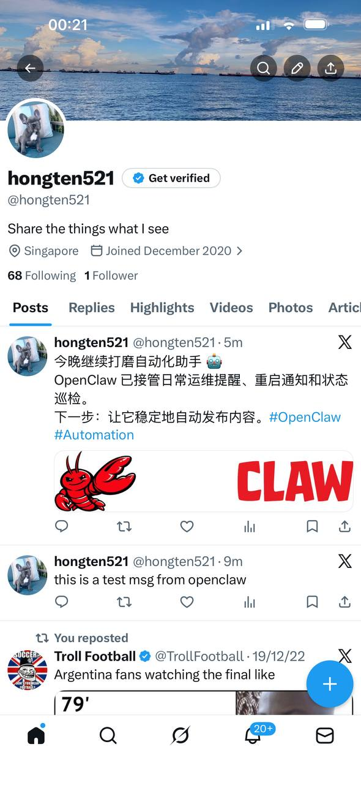

From X Post to Blog: Automation Progress Snapshot
OpenClawXAutomationSource: https://x.com/i/web/status/2027779694532432161
This post records a real milestone that was first published on X and is now archived here with context.

What was posted:
OpenClaw has taken over daily operations reminders, restart notifications, and status checks. The next step is stable automated content publishing.
Why this matters:
This is the point where automation shifts from isolated scripts to a reliable workflow loop: monitor → notify → verify → publish.
Next actions:
1) Keep publication cadence stable
2) Improve quality control for generated content
3) Expand to repeatable cross-platform posting flows
Small systems, repeated consistently, compound fast.
Comments